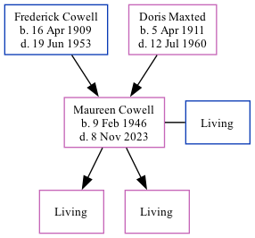

Maureen Joyce Baker (née Cowell) 1946 - 2023
[ Home ] | [ Calendar ] | [ Surnames Index ] | [ Family History ]The twin sister of Melvin James and the daughter of Frederick Cowell (a truck driver) and Doris Maxted, Maureen Cowell, a cousin on the mother's side of <a href="I1.html">Nigel Horne</a>, was born in Thanet, Kent, England on Feb 9, 1946<span class="citation">1</span> along with her twin brother Melvin James and. She was orphaned at the age of 14 following the death of her father in 1953 and mother in 1960.</p><p> She married Colin Baker (with whom she had 2 surviving children <a href="I1335.html">Annette Jane</a> and <a href="I1336.html">Caroline</a>) in Bridge, Kent, England around Feb 1969<span class="citation">2</span> (Jan/Feb/Mar Confirmed that this is the correct husband for Maureen Cowell in e-mail conversation.) On Aug 21, 2015, she lived in Bishopsbourne, Kent. <p>She died on Nov 8, 2023.
Parents
- Frederick James was born on Apr 16, 1909
- Doris Annie Minnie was born on Apr 5, 1911
Citations
- England & Wales, Birth Index: 1916-2005 Online publication - Provo, UT, USA: The Generations Network, Inc., 2008.Original data - General Register Office. England and Wales Civil Registration Indexes. London, England: General Register Office. © Crown copyright. Published by permission of the Cont
- England & Wales, Marriage Index: 1916-2005 Online publication - Provo, UT, USA: The Generations Network, Inc., 2009.Original data - General Register Office. England and Wales Civil Registration Indexes. London, England: General Register Office. © Crown copyright. Published by permission of the Cont
Notes
Breast cancer survivor.
Media
England & Wales marriages 1837-2008 - BMD/M/1969/1/AZ/000226/152
England & Wales births 1837-2006 - BMD/B/1946/1/AZ/000273/138
UK electoral registers 2002-2014 Transcription - 192-BAKER-MAUREEN-CT4-1749414534
Family Tree
Generated by Ged2Site. Last updated on Jul 20, 2025